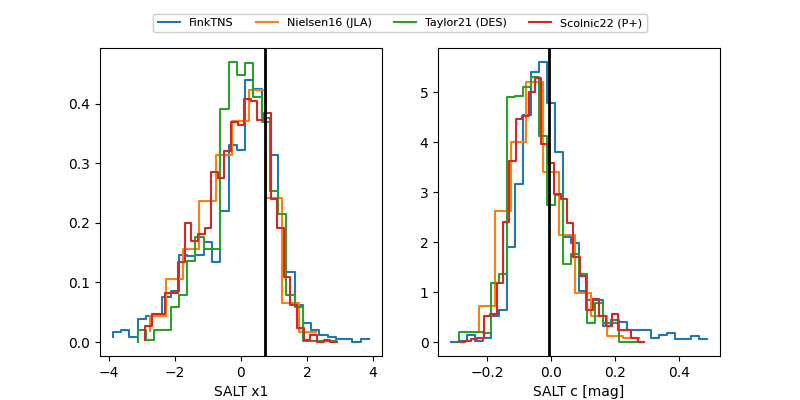

TNS: 2025xpf
YSE: 2025xpf
2025xpf (yse,tns)
PS25hnd (panstarrs)
equatorial (ra, dec) = (243.2564,+23.60061)
galactic (l, b) = (40.1926,+44.62316)

last ps1::g=20.46, ps1::r=20.25, ps1::z=20.67
3 ps1::g, 3 ps1::r, 1 ps1::z detections